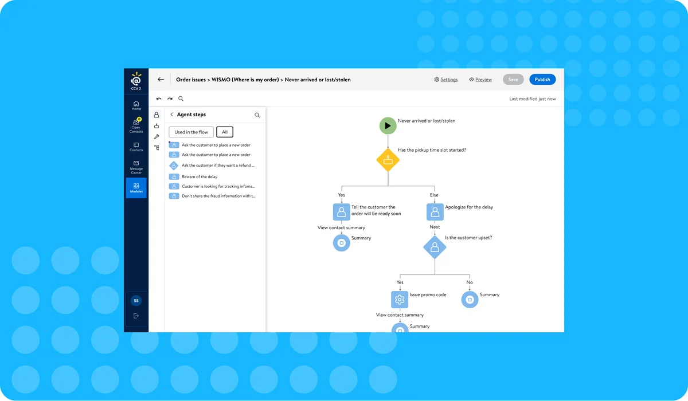
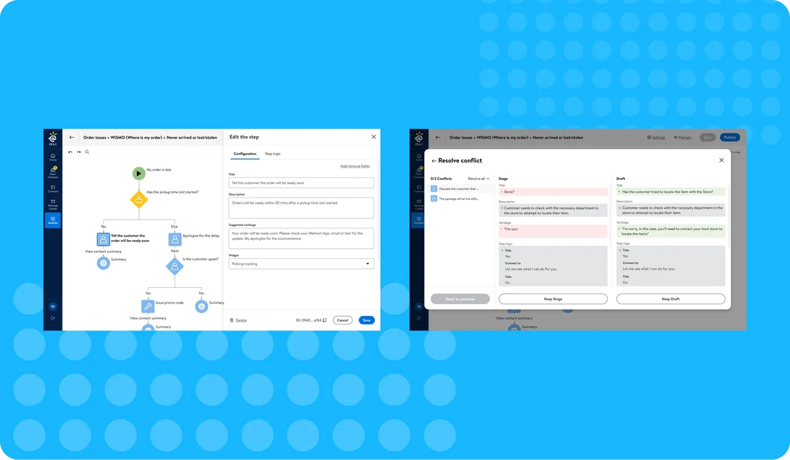

Walmart Customer Care Workflow Engine
The back end of the Customer Care Application: a drag-and-drop tool that lets business and operations teams build and maintain complex agent workflows without engineering help.
- Company
- Walmart
- Area
- Internal tooling
- Users
- Business and operations teams

- faster workflow delivery
- 40%
- for building and maintaining workflows
- 5 tools → 1
- across Walmart now build their own workflows
- More teams
Overview
The Workflow Engine is the back end of the Customer Care Application, designed for simplicity and easy maintenance. With a clear interface and drag-and-drop building, people can create, change and maintain complex workflows without specialized training, and keep them up to date with little effort.
Challenge
Creating a workflow used to take several technically complex stages across five different tools. Without training and technical support, turning a customer issue into an efficient guided workflow was hard. The workflow team had two main pain points.
No end-to-end visibility
People struggled to see what each step was doing in the context of the whole flow. That led to confusion, duplicated effort and slow troubleshooting.
Slow turnaround
Dependencies between teams stretched timelines. Even a minor correction, like fixing a typo, could take up to a week.
Solution
The Workflow Engine lets people build workflows with a simple drag-and-drop interface and a central library of reusable steps. Business and operations teams can build and manage workflows on their own, without technical support, and keep agents' processes current so agents can focus on the customer.

Impact
Since launch, we deliver workflows 40% faster than before, and more Walmart business units now use the tool to build their own.